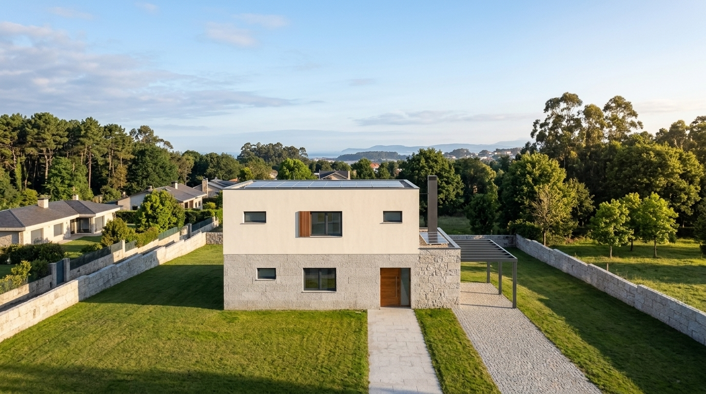
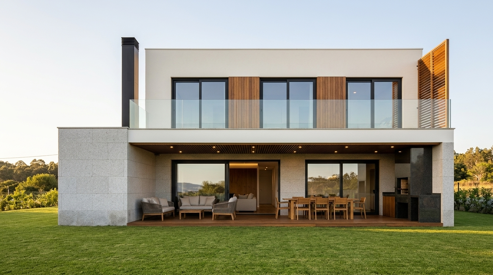
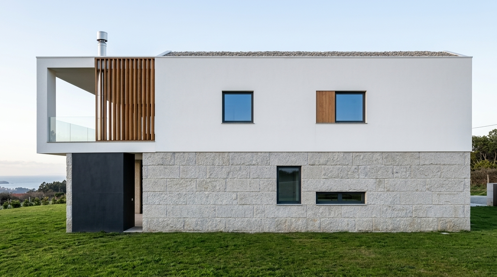
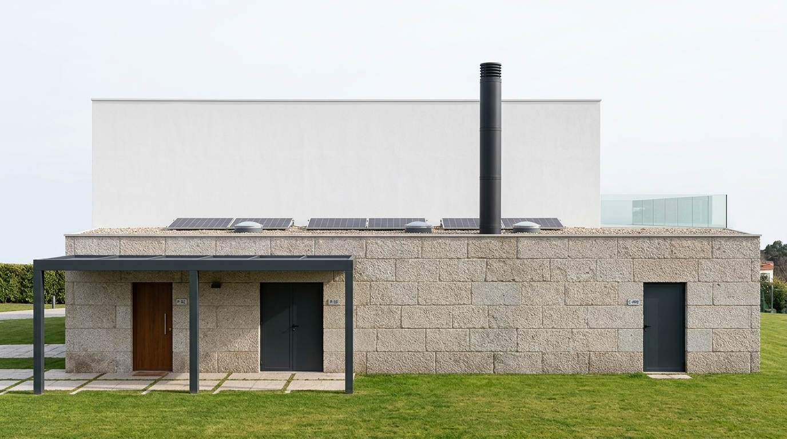
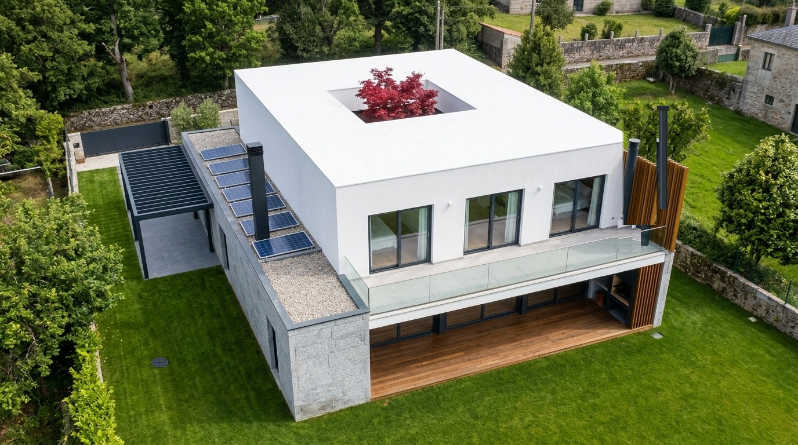

Las 5 Vistas Exteriores Definitivas de la Vivienda
Renders fotorrealistas depurados con el modelo 3D exacto: muro ciego de barbacoa, celosía de iroko con tiro oculto, 3 accesos en ala Oeste y volumen completo de 2 plantas.

Acceso Principal, Pérgola de Garaje y Porche de Entrada
Puerta pivotante de iroko P-01 (1,10×2,40m) en zaguán retranqueado, ventanal de despacho C-02 y baño PB. En planta alta: baño de suite, baño de hijos y ventanal de la Sala Polivalente C-10B. A la derecha, pérgola metálica para 2 coches.

Porche de 3,00 m, Pradera de Césped y Balcón Corrido P1
Porche Sur de 3,00 m continuo con falso techo de iroko y tarima enrasada a cota cero. Grandes correderas de salón C-08 (4,80m) y comedor C-09 (3,60m). Arriba, balcón corrido de 3,00 m con barandilla de vidrio laminar y las 3 balconeras de los dormitorios.

Muro Ciego Pétreo, Barbacoa y Celosía con Tiro Inox Oculto
Testero Este de la barbacoa 100% cerrado en granito continuo (sin huecos al exterior). Conducto de humos inox Ø250mm oculto tras la celosía de lamas de iroko de la suite saliendo a +6,80m. En PB: ventana corrida de cocina C-04B y ventana de Despensa Santos C-04. Cubierta limpia sin chimeneas.

Ala Continua en Granito, 3 Puertas, Claraboyas y Chimenea
Muro continuo de granito de 16,45 m desde la entrada Norte hasta el final del Porche Sur. Tres accesos exteriores: 1) P-02 Mudroom, 2) P-05 Sala Técnica/Surf, 3) C-09B Caseta de Jardinería. Chimenea negra de salón a +7,25m, 12 paneles FV y 2 claraboyas tubulares Velux SunTunnel en cubierta de grava (+3,45m).

Conjunto Arquitectónico Bioclimático: Corrala Central y Cubiertas de Grava
Vista aérea completa mostrando la edificación real de 2 plantas alrededor del patio central con el Arce Japonés. La terraza sur de planta alta cuenta con la celosía de iroko retranqueada a X=16,30 m: el tiro de chimenea de la barbacoa discurre 100% por el exterior (tras la celosía), dejando el suelo del balcón libre de tubos. En el acceso norte se aprecia la arqueta técnica del depósito enterrado de pluviales de 6.000 L. Cubiertas invertidas con grava, 12 paneles FV y lucernarios en ala Oeste.